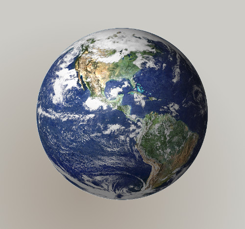
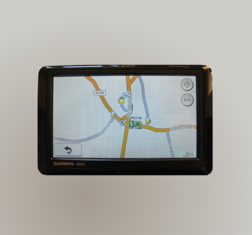

or
Spacial is Special
You have to deal with data that has special rules.
Rules based on a reality not told in schools

Remember
The GEO information lays over something mathematical that has its own rules.
THE DATUM

You have to choose what you want to break:
In the best case you can choose two of the three.
(I'm skipping several courses on Cartography with this slide, trust me on this)
Remember
The GEO information uses a mathematical trick to make things flat orderly.
THE PROJECTION
Toghether a DATUM and a PROJECTION make a CRS
The most famous catalog of CRS is EPSG
There's a little bit of fuss
In theory it should be lon/lat (x,y)
But we are used to lat/lon
Always check things ... twice
KNOW YOUR (geo) DATA!!!
Slides and repo